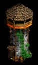

Edificações da Idade do Castelo (Castle Age)

Nome: Mosteiro (Monastery)
Custo:
 175
175
Pontos de vida:
2100
Ataque:
0
Guarnição:
10 (somente se definido um ponto de
agrupamento enquanto as unidades estiverem sendo criadas)
Alcance:
0
Descrição:
Os Mosteiros são Edificações tanto
Econômicas quanto Militar, pois ele permite que você crie
Monges, que são usados para curar suas unidades ou converter as
do inimigo. Ele permite também que sejam pesquisadas tecnologias
para melhorar o poder de cura e de conversão dos monges. Os
Mosteiros não podem ser convertidos por Monges inimigos. As
relíquias guarnecidas dentro de um Mosteiro fornecem um
suprimento contínuo de ouro para seu estoque de suprimentos. Os
Monges podem ser guarnecidos dentro do Mosteiro se você definir
ali um ponto de agrupamento enquanto os Monges estiverem sendo
criados. Eles não podem entrar novamente após terem sido
desguarnecidos.

Nome: Oficina de
Catapultas (Siege Workshop)
Custo:
 200
200
Pontos de vida:
2100
Ataque:
0
Guarnição:
10 (somente se definido um ponto de
agrupamento enquanto as unidades estiverem sendo criadas)
Alcance:
0
Descrição: A Oficina de Catapultas é usada para criar armas de cerco. As unidades da Oficina de Catapultas podem ser guarnecidas dentro dela se você definir ali um ponto de agrupamento enquanto as unidades estiverem sendo criadas. Elas não podem entrar novamente após terem sido desguarnecidas. Você deve ter uma Ferraria para poder construir uma Oficina de Catapultas.

Nome: Castelo (Castle)
Custo:
 650
650
Pontos de vida:
4800
Ataque:
11
Guarnição:
20
Alcance:
8
Descrição:
De alto custo e de construção
demorada, o Castelo é a estrutura defensiva mais forte. No
Castelo você pode criar e atualizar sua unidade exclusiva da
civilização e na Idade Imperial, pode também criar o Trabuco, um
poderoso mecanismo de cerco. Várias tecnologias militares
importantes também podem ser pesquisadas no Castelo.
Um Castelo abriga 20 unidades de
população e pode guarnecer 20 aldeões ou unidades militares
(exceto armas de cerco). As unidades podem ser guarnecidas a
qualquer momento. Você pode guarnecer unidades exclusivas
definindo um ponto de agrupamento enquanto as unidades estiverem
sendo criadas. As unidades guarnecidas no Castelo são curadas
mais rapidamente do que as guarnecidas em outras edificações.

Nome: Torre de Guarda (Guard
Tower)
Custo:
 25
25
 125
125
Pontos de vida:
1500
Ataque:
6
Guarnição:
5
Alcance:
8
Descrição:
A Torre de Guarda é uma
atualização do Posto de Observação. Ela é mais forte e possui
maior força de ataque. É possível guarnecer as unidades no seu
interior para proteção e adicionar força de ataque suplementar à
torre.

Nome: Muralha Fortificada
(Fortified Wall)
Custo:
 5
5
Pontos de vida:
3000
Ataque:
0
Guarnição:
0
Alcance:
0
Descrição: As Muralhas Fortificadas são uma atualização da Muralha de Pedra. São mais resistentes do que as Muralhas de Pedra, porém caras para atualizar e lentas para construir. É quase impossível romper uma Muralha Fortificada sem armas de cerco.